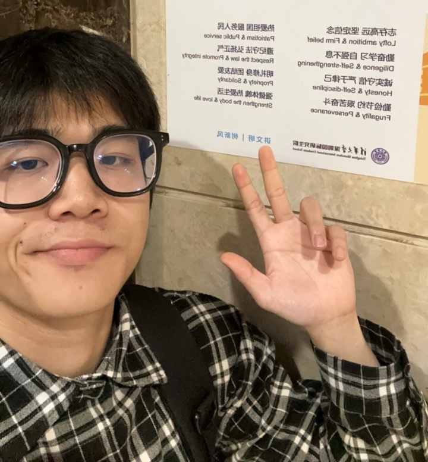
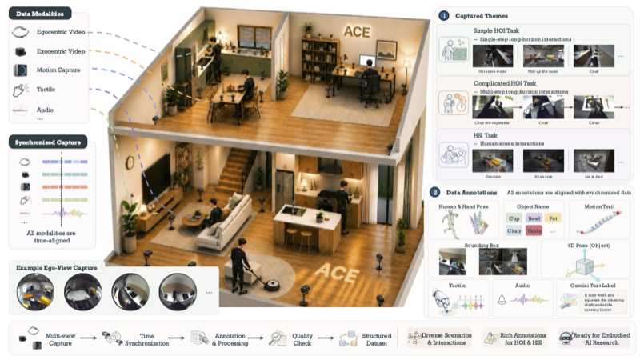
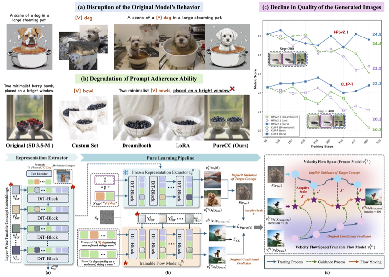
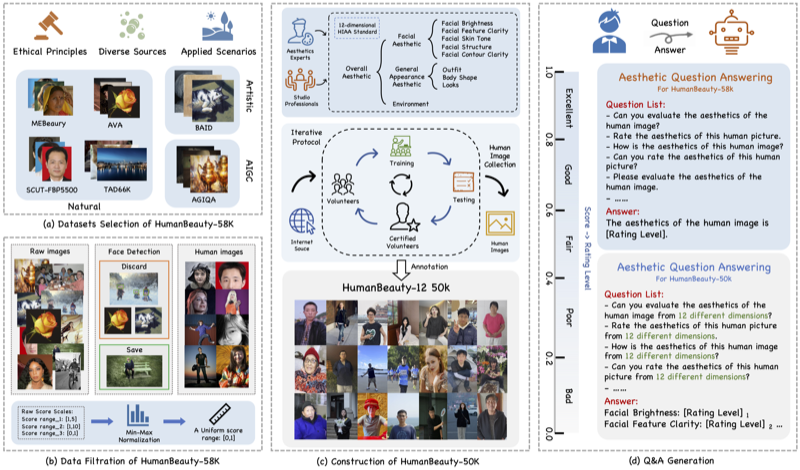
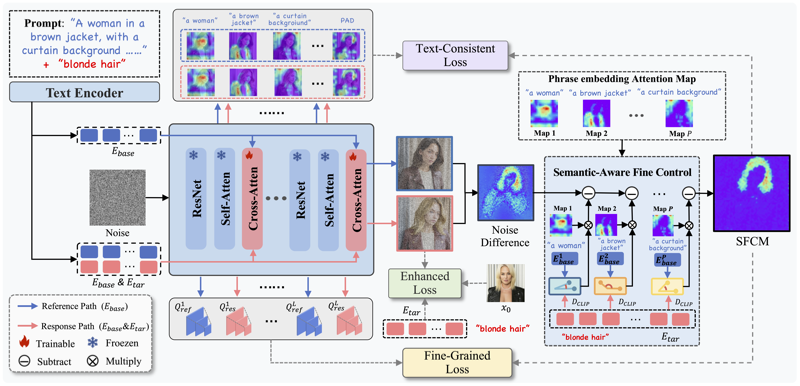
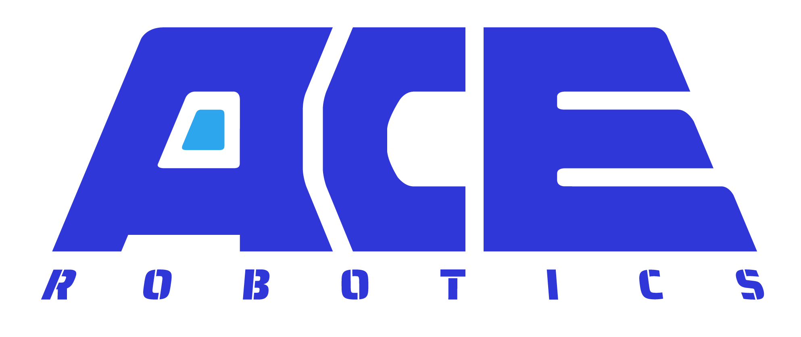

|
 |
Zhichao LiaoMaster of Engineering
Institute of Data and Information (iDI) Email: liaozc23 [at] tsinghua.org.cn |

Biography
I received my Master of Engineering degree from Tsinghua University under the supervision of Prof. Long Zeng and Prof. Pingfa Feng. Prior to that, I obtained my Bachelor of Engineering degree from China University of Mining and Technology.
Selected Publications | Google Scholar
(* indicates equal contributions)
|
 |
ACE-Data-0: Human-Centric Ambient Capture as Embodied Data Engine ACE Robotics Team: Zhichao Liao, Dacheng Tao, Xiaogang Wang, Liang Pan, Ziwei Liu, et al. Technical Report, 2026.[paper] [dataset] [project page] |
|
 |
PureCC: Pure Learning for Text-to-Image Concept Customization Zhichao Liao*, Xiaole Xian*, Qingyu Li, Wenyu Qin, Meng Wang, Weicheng Xie, Siyang Song, Pingfa Feng, Long Zeng, Liang Pan. IEEE/CVF Conference on Computer Vision and Pattern Recognition. (CVPR), 2026. |
|
 |
HumanAesExpert: Advancing a Multi-Modality Foundation Model for Human Image Aesthetic Assessment Zhichao Liao, Xiaokun Liu, Wenyu Qin, Qingyu Li, Qiulin Wang, Pengfei Wan, Di Zhang, Long Zeng, Pingfa Feng arXiv preprint:2503.23907[paper] [code] [project page] |
|
 |
SPF-Portrait: Towards Pure Text-to-Portrait Customization with Semantic Pollution-Free Fine-Tuning Xiaole Xian*, Zhichao Liao*, Qingyu Li, Wenyu Qin, Pengfei Wan, Weicheng Xie, Long Zeng, Linlin Shen, Pingfa Feng arXiv preprint:2504.00396[paper] [code] [project page] |

|
Freehand Sketch Generation from Mechanical Components Zhichao Liao*, Di Huang*, Heming Fang*, Yue Ma, Fengyuan Piao, Xinghui Li, Long Zeng, Pingfa Feng The 32th ACM International Conference on Multimedia. (ACM MM), 2024.[paper] [code] [project page] |
Experience
|
 |
Ambient Capture Group, ACE Robotics Research Intern, advised by Dr. Liang Pan and Prof. Ziwei Liu Research topics: World Model and Scalable Embodied Data Collection Oct. 2025 - Jun. 2026, Shenzhen, China |
|
Kling Team, Kuaishou Technology Research Intern, led by Dr. Pengfei Wan Research topics: Visual Generation and Evaluation Sep. 2024 - Oct. 2025, Shenzhen, China |
Education
|
Tsinghua University, China Sep. 2023 - Jun. 2026 Master of Engineering, Institute of Data and Information (iDI) Advisor: Prof. Long Zeng and Prof. Pingfa Feng |
|
China University of Mining and Technology, China Sep. 2019 - Jun. 2023 Bachelor of Engineering, School of Information and Control Engineering |
Honors & Awards
- Excellent Graduate of Tsinghua University, 2026.
- Outstanding Graduate of China University of Mining and Technology, 2023.